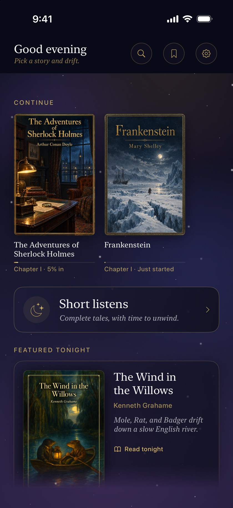
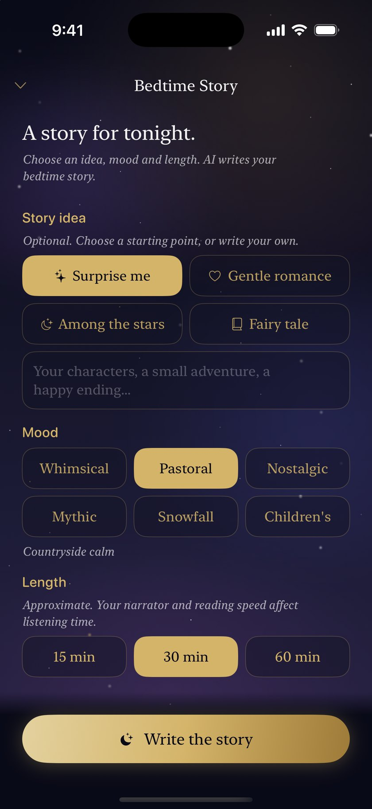
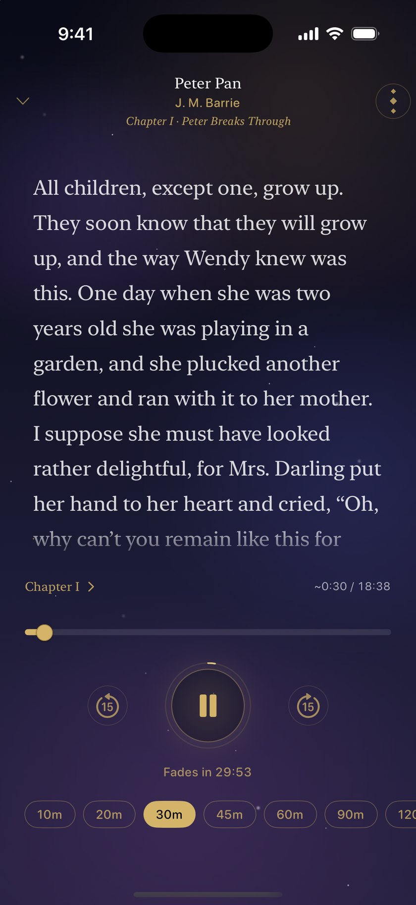
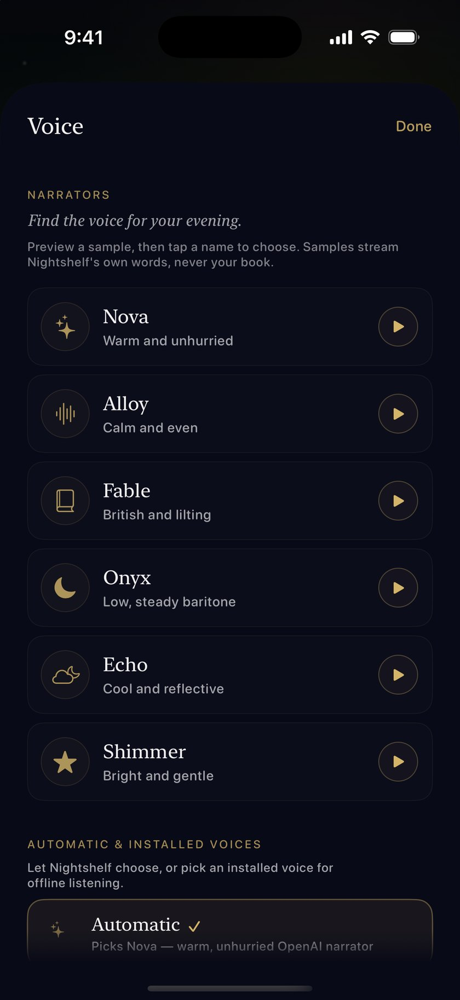
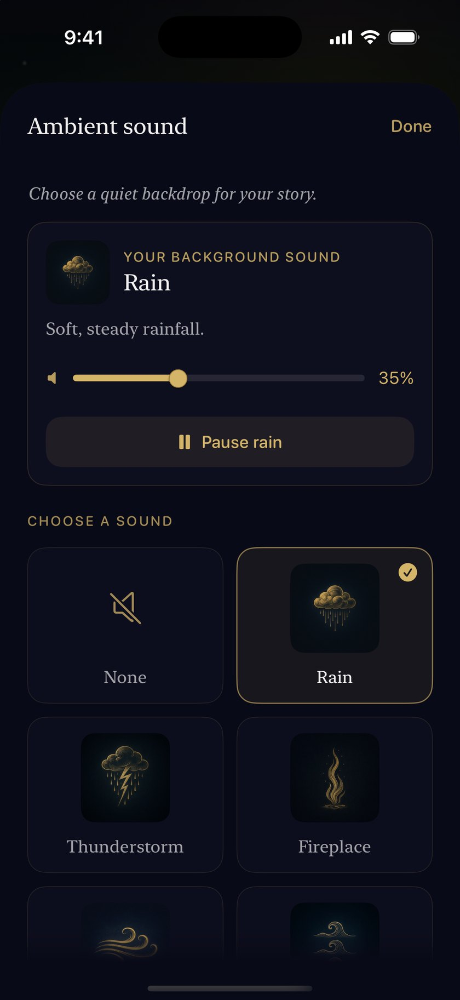
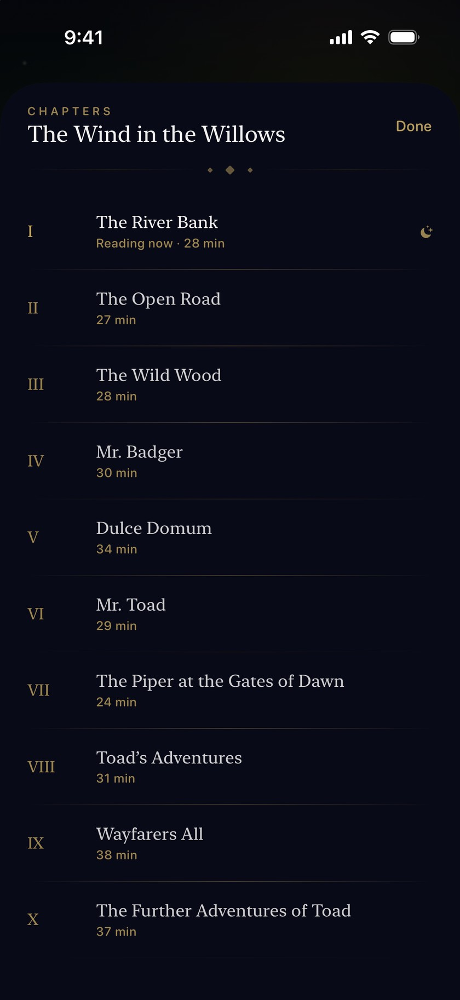
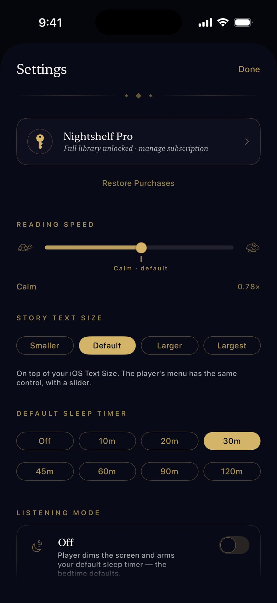

A shelf of bedtime stories — eighty-two timeless classics, and calm new ones written for you by AI with Nightshelf Pro, read aloud in a soft, sleepy voice with ambient sound underneath.
No account. No ads. Just goodnights.

Read it, hear it, and drift off — Nightshelf, screen by screen.






Simple, warm, and unhurried — the way bedtime should feel.
Eighty-two timeless tales — Austen, Verne, Grimm, and friends — arranged on beautiful nighttime shelves, with your Continue row waiting right on top. Thirteen are free; Nightshelf Pro opens the other sixty-nine.
Pick a place, a mood, and a length — and AI writes a calm original bedtime story for tonight, with a cover painted to match. A fresh one each night, and it needs a connection. Conjuring stories is part of Nightshelf Pro.
The on-device voice reads every book aloud with the network off, free and unlimited, or switch to one of six warm AI narrators with Nightshelf Pro when you want something richer. Voice, pace, and reading mode — all yours to set.
Rain, fireplace, ocean — layered gently under the narration, with a sleep timer that fades everything out as you drift off.
No account, no sign-in, no ads, no trackers. Your progress and settings live on your device and sync only through your own private iCloud — Nightshelf keeps no copy on any server. The two features that send your words off the phone, cloud narration and Tonight's Story, ask permission first; say no and they stay off. The privacy policy names every stop those words make, and the one small thing that isn't behind the permission.
Your place in every story is held overnight and synced privately through iCloud, so tomorrow's chapter starts exactly where tonight's ended.
Nightshelf is built around the quiet minutes before sleep.
Tonight's story waiting where you left it, beside shelves of classics.
A warm voice reads aloud while rain or firelight murmurs underneath.
The sleep timer fades the story out and holds your place till tomorrow.
No. There's nothing to sign up for — no account, no email, no password, and no ads. Your place in every story and your settings live on your phone and sync through your own private iCloud, so they're waiting on a new phone without Nightshelf ever keeping a copy.
Thirteen of the eighty-two classics are free and complete, read aloud by the on-device voice, with every ambient soundscape, the sleep timer, and dimming — no time limit, no ads. Nightshelf Pro opens the other sixty-nine books, the six warm AI narrators, the longer 90- and 120-minute timers, and conjuring Tonight's Story. Prices are shown in the app, and the annual plan includes a 7-day free trial — the paywall shows the trial only when your Apple ID is eligible.
Yes — the shelf is built for airplane mode. Every book ships inside the app, and the on-device voice reads any of them aloud with the network off, with ambient sound and the sleep timer running as usual. Only two things need a connection: the six cloud narrators, and conjuring a fresh Tonight's Story.
No. Every book on the shelf is the complete text of the story — real chapters, not summaries or retellings — drawn from public-domain editions. That's also how the whole shelf can ship inside the app.
Nowhere, unless you say so. Reading, listening with the on-device voice, ambient sound, and the timer all happen on your phone. The two features that send anything off the device — cloud narration and Tonight's Story — ask your permission first, before the first word leaves; decline and they simply stay off while everything else keeps working. The privacy policy names every stop those words make, and the one small thing that isn't behind the permission.
Soon. Nightshelf is coming to iPhone and isn't on the App Store yet. It runs on iPhones with iOS 17 or later — it's an iPhone app rather than an iPad one, and the whole interface keeps to the dark, because it's made for the last minutes of the day.
Nightshelf is coming to iPhone. A bedtime story, read aloud, every night.